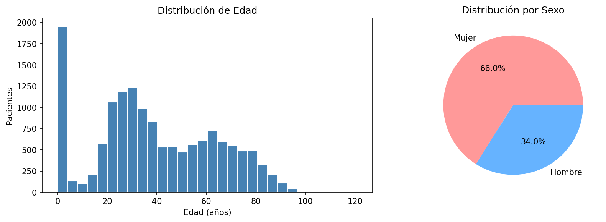
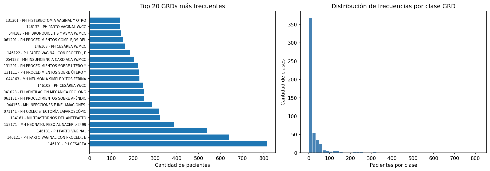
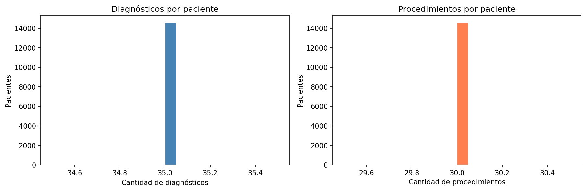
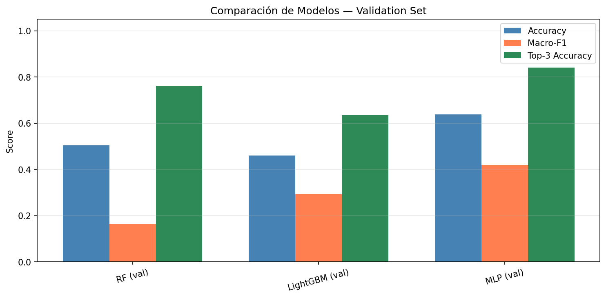
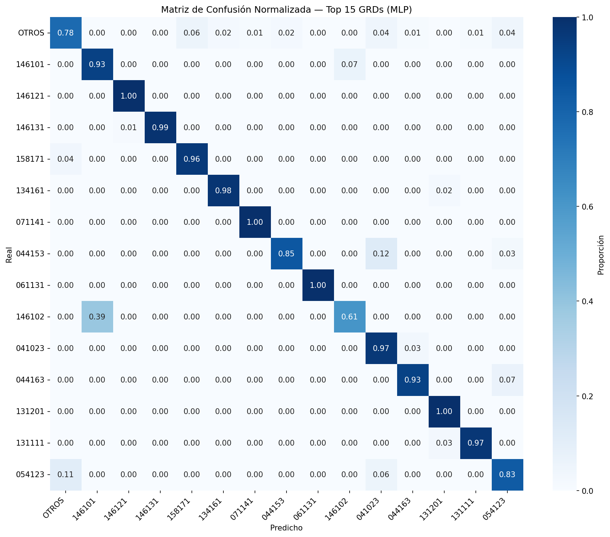
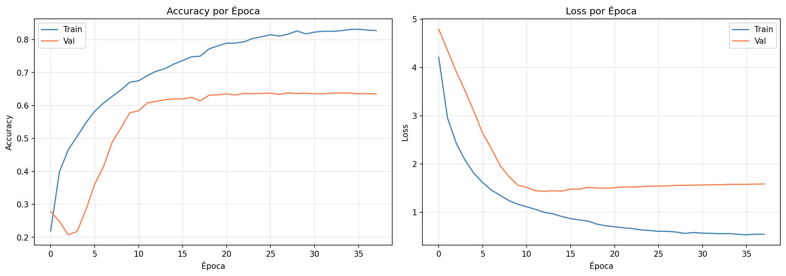

Predicción automática de GRD
Hospital El Pino — San Bernardo, Chile
Modelo de Aprendizaje de Máquina para clasificar Grupos Relacionados con el Diagnóstico a partir de datos clínicos
Integrantes:
Cristóbal Flores · Francisco Morales
Matías Muñoz · Benjamín Peña
CINF104 — Aprendizaje de Máquina · UNAB 2026
Problema y Objetivo
¿Qué es un GRD?
- Grupo Relacionado con el Diagnóstico
- Clasifica la atención hospitalaria
- Determina el costo de cada caso
- Hoy se asigna manualmente
Problema: codificación manual lenta y propensa a errores.
Objetivo: construir un modelo de ML que prediga el GRD de un paciente a partir de diagnósticos, procedimientos, edad y sexo, como sistema de apoyo al codificador clínico.
Trabajos Relacionados
| Autor / Año |
Dataset |
Clases |
Método |
Accuracy |
| Raju et al. (2021) |
Hospital USA |
25 categorías |
Gradient Boosting |
72% |
| Goldstein et al. (2017) |
Clalit Health |
30 clases |
Random Forest |
68% |
| Gartner et al. (2015) |
Hospital UK (NHS) |
10 DRGs |
SVM + Reglas |
78% |
Todos los trabajos previos usan pocas clases (10–30). Nosotros enfrentamos 230 clases — un problema mucho más difícil.
Dataset — Hospital El Pino
- Diagnóstico principal CIE-10 + hasta 34 secundarios
- Hasta 30 procedimientos por paciente
- Edad, sexo y GRD (etiqueta objetivo)
- Datos reales de hospitalizaciones de San Bernardo
Análisis Exploratorio — Demográficos

Edad promedio 39.4 años · 66% mujeres → fuerte presencia de GRDs obstétricos.
Distribución GRD — Long-Tail

- GRD más frecuente: solo 5.6%
- 76 GRDs con 1 solo paciente
- Top 119 cubren el 80%
Clásica distribución long-tail: pocas clases con muchos datos, muchas clases con casi nada.
Calidad de los Datos
✓ Completitud
Sin valores nulos en columnas clave (diagnóstico principal, GRD, edad, sexo).
✓ Correctitud
Códigos CIE-10 validados contra catálogo oficial. Edad dentro de 0–121.
⚠ Outliers
Casos extremos en nº de diagnósticos (hasta 34) y edad. Se conservan: son clínicamente válidos.

Estrategia Long-Tail
Agrupación de clases raras
Mantenemos solo GRDs con ≥10 pacientes. El resto se fusiona en la clase OTROS.
92.4%
cobertura específica
230 clases totales — balance entre granularidad clínica y entrenabilidad del modelo.
Ingeniería de Features
Cada paciente → vector de 287 dimensiones
| Feature |
Justificación |
Dim. |
| Multi-hot diagnósticos (top-200 CIE) | Captura presencia/ausencia de condiciones clínicas | 200 |
| Multi-hot procedimientos (top-83) | Intervenciones realizadas al paciente | 83 |
| Edad normalizada (z-score) | Variable continua — afecta severidad | 1 |
| Nº diagnósticos | Proxy de comorbilidad | 1 |
| Nº procedimientos | Proxy de complejidad del caso | 1 |
| Sexo | Determinante en GRDs obstétricos / urológicos | 1 |
| TOTAL | 287 |
División del Dataset
- Train: ajuste de parámetros
- Validación: selección de hiperparámetros y early stopping
- Test: evaluación final — nunca se toca durante entrenamiento
- Split estratificado para mantener distribución de clases
Modelos Candidatos
Random Forest
Por qué: baseline interpretable, robusto a features binarios, manejo natural de no-linealidad.
200 árboles · votación mayoritaria
LightGBM
Por qué: estado del arte en datos tabulares, eficiente, gradient boosting moderno.
500 árboles · early stopping
MLP (Red Neuronal)
Por qué: capacidad de modelar interacciones complejas entre 287 features.
4 capas · BatchNorm + Dropout
Tres familias diferentes → cobertura amplia del espacio de hipótesis.
Arquitectura del MLP
Optimizador
Adam · lr=1e-3
Pérdida
Categorical Cross-Entropy
Regularización
Dropout 0.3 + Early Stopping
Métricas de Evaluación
Accuracy
Proporción de aciertos exactos. Métrica base, pero puede enmascarar fallos en clases raras.
Macro-F1
Promedio de F1 por clase sin ponderar. Crítico: mide desempeño en clases raras — nuestro principal desafío long-tail.
Weighted-F1
F1 ponderado por tamaño de clase. Refleja desempeño global realista.
Top-3 Accuracy
¿El GRD real está entre las 3 mejores predicciones? Relevante clínicamente: un codificador elegiría entre 3 candidatos sugeridos.
Resultados
| Modelo |
Accuracy |
Macro-F1 |
Weighted-F1 |
Top-3 Acc |
| Random Forest |
50.4% |
16.5% |
42.6% |
76.1% |
| LightGBM |
46.1% |
29.2% |
47.5% |
63.6% |
| MLP (Red Neuronal) GANADOR |
63.8% |
42.0% |
61.7% |
84.2% |
MLP supera en las 4 métricas. Top-3 de 84.2% → aplicable como sistema de apoyo clínico.
Comparación Visual de Modelos

Análisis de Errores

- GRDs frecuentes: ≥93% de acierto
- Error principal: confusión 146101 ↔ 146102
- Parto vaginal con / sin complicaciones
Los errores ocurren entre GRDs de la misma familia con distinta severidad — limitación del diseño IR-GRD.
Curvas de Entrenamiento — MLP

Gap moderado → capacidad suficiente, pero faltan datos en clases minoritarias.
Comparación con Literatura
| Trabajo |
Clases |
Método |
Accuracy |
| Raju et al. (2021) |
25 categorías |
Gradient Boosting |
72% |
| Goldstein et al. (2017) |
30 clases |
Random Forest |
68% |
| Este trabajo |
230 clases |
MLP |
63.8% |
Resultado comparable en un problema 7–9× más difícil (230 vs 25–30 clases).
Conclusiones
1. La estrategia long-tail funciona
Agrupar GRDs raros → 92.4% de datos con etiqueta específica sin perder granularidad clínica.
2. El MLP es el mejor modelo
63.8% accuracy · 84.2% Top-3 · supera a RF y LightGBM en las 4 métricas.
3. Aplicable como apoyo clínico
Top-3 de 84.2% → el codificador humano valida entre 3 candidatos sugeridos.
Limitaciones y Trabajo Futuro
⚠ Limitaciones
- Un solo hospital — generalización limitada
- Clases raras con pocos datos
- Gap train/val (overfitting moderado)
✓ Mejoras propuestas
- Pesos por clase → mejor Macro-F1
- Embeddings CIE (Med2Vec)
- Pipeline en cascada: familia → severidad
- SHAP para interpretabilidad
- Entrenamiento multi-hospital
¡Gracias!
¿Preguntas?
Cristóbal Flores · Francisco Morales
Matías Muñoz · Benjamín Peña
CINF104 — Aprendizaje de Máquina · UNAB 2026
1 / 22
← → Navegar · F: pantalla completa · Home/End